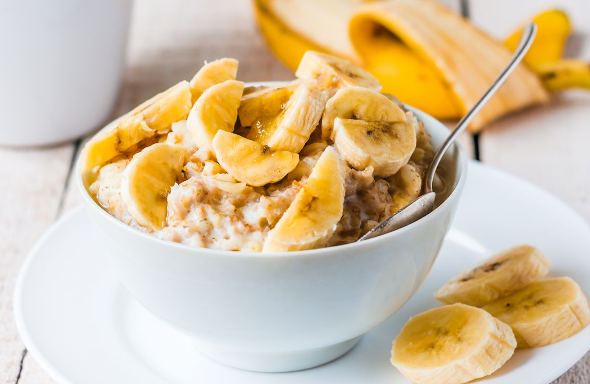
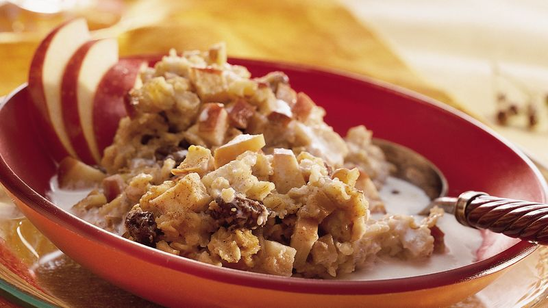
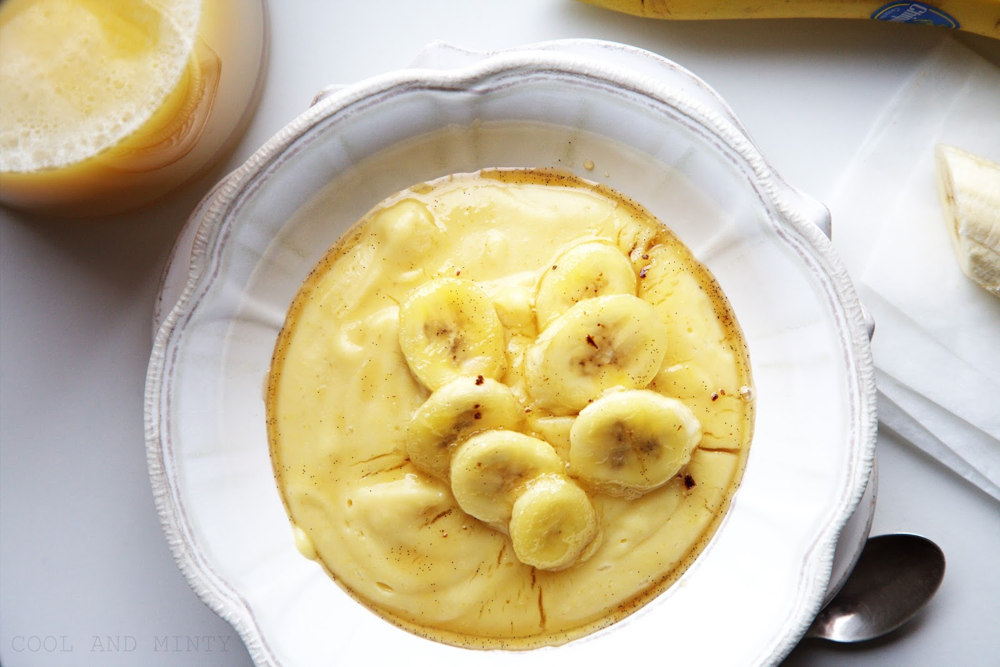

MY FAVOURITE RECIPES
Oh, I adore to cook. It makes me feel minless in a worthwhile way
Peanut butter oatmeal

Ingridients
- 40g of oats
- 115 ml of soy milk
- 1 tbls of penaut butter or 2 eggs
- 250 ml of water
- 1 banana
- Put oats and water into pot and boil it.
- Next, add milk and penaut butter and boil for 5 minutes.
- In the meantime mash the half of banana and the other half slice.
- Add mashed banana to the boiling oatmeal.
- Pour the oatmeal into your favourite bowl and put the sliced banana on the top.
Apple oatmeal

Ingridients
- 40g of oats
- 115 ml of soy milk
- 2 tbls of honey
- 250 ml of water
- 1 cup of appple souce
- 15 roasted almonds
- Put oats and water into pot and boil it.
- Next, add milk and boil for 5 minutes.
- Pour the oatmeal into your favourite bowl and put almonds, honey and apple souce on the top.
High-protein millet with eggs and banana

Ingridients
- 50g of millet
- 115 ml of soy milk
- 2 eggs
- 250 ml of water
- 1 banana
- Put oats and water into pot and boil it.
- Next, add milk and eggs and boil for 5 minutes.
- In the meantime mash the half of banana and the other half slice.
- Add mashed banana to the boiling oatmeal.
- Pour the oatmeal into your favourite bowl and put the sliced banana on the top.